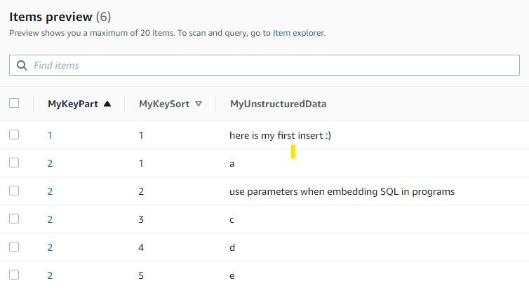

This was first published on https://www.dbi-services.com/blog/dynamodb-partiql-i/ (2020-11-24)
Republishing here for new followers. The content is related to the versions available at the publication date.
.
This sounds paradoxical to execute SQL statements on a NoSQL database, but we have now a new API to interact with DynamoDB, which looks like SQL. AWS data services is a collection of purpose-built database services that have their own API. The relational databases in RDS all share a similar API thanks to the SQL standard. However, for non-relational databases, there is no standard: each NoSQL databases, even if they have similar get/put API, do not share a common language. In order to build a converged API on top of that, Amazon is using the Open Source PartiQL to provide SQL-like access. And this has been recently implemented for DynamoDB. Here are my first tests, this will be a multi-part blog post. I’ll mention immediately the most important: you are still in a NoSQL database. The “SQL” there has very little in common with the SQL used in relational databases. Introducing the INSERT, UPDATE, SELECT, DELETE keywords do not transform a key-value datastore to a relational database: you still put and get items, not set of rows, you do not join multiple items in the database, you are not ACID,…
I’ll run from AWS CLI here and for the moment, PartiQL is not available in the Version 2:
[opc@a tmp]$ aws --version
aws-cli/2.1.3 Python/3.7.3 Linux/4.14.35-2025.400.9.el7uek.x86_64 exe/x86_64.oracle.7
[opc@a tmp]$ aws dynamodb execute-statement
usage: aws [options] [ ...] [parameters]
aws: error: argument operation: Invalid choice, valid choices are:
However, it is available in Version 1 (even if Version 2 is “now stable and recommended for general use”) so I installed temporarily Version 1:
cd /var/tmp
wget -c https://s3.amazonaws.com/aws-cli/awscli-bundle.zip
unzip -o awscli-bundle.zip
sudo ./awscli-bundle/install -i /var/tmp/aws-cli/awscli1
alias aws='/var/tmp/aws-cli/awscli1/bin/aws "$@" --output json | jq --compact-output'
You can see that I like the output as compact json, as this is easier to put in the blog post, but of course you don’t have to. And you can also run the same from the console.
For the moment, this feature is not deployed in all regions, so if you don’t see it check on another region. The announce about it is there: You now can use a SQL-compatible query language to query, insert, update, and delete table data in Amazon DynamoDB. When you will read my blog post, all the above may be outdated and you can use it in all regions, and with the latest AWS CLI. While I’m there, the documentation for this feature is in the developer guide: https://docs.aws.amazon.com/amazondynamodb/latest/developerguide/ql-reference.html
There is no DDL like CREATE TABLE so you need to create your DynamoDB with the usual API: Console, CLI or API
aws dynamodb create-table --attribute-definitions \
AttributeName=MyKeyPart,AttributeType=N \
AttributeName=MyKeySort,AttributeType=N \
--key-schema \
AttributeName=MyKeyPart,KeyType=HASH \
AttributeName=MyKeySort,KeyType=RANGE \
--billing-mode PROVISIONED \
--provisioned-throughput ReadCapacityUnits=25,WriteCapacityUnits=25 \
--table-name Demo
This the same table as I used in a previous post in GSI and LSI. This table has a composite key, partitioned by hashed on the MyKeyPart attribute and by range on MyKeySort, locally indexed on the MyKeySort attribute by default.
I can insert new items there with a simple INSERT statement:
[opc@a aws]$ aws dynamodb execute-statement --statement \
"insert into Demo value {'MyKeyPart':1,'MyKeySort':1,'MyUnstructuredData':'here is my first insert :)'}"
{"Items":[]}
You can already see that besides the INSERT keyword, nothing is similar to RDBMS SQL. In SQL the INSERT reads from a set of rows, and the VALUES keyword is a table value constructor to provide this set of rows rather than querying it from a table. here we have s singular VALUE keyword to input a single JSON document.
Mixing the code (SQL keywords, table and attribute identifiers) with data (literal values, like the numbers or character strings I used there) is handy in an interactive query console, but is not the right way to code. As with any API, we must code with variables, and pass them as parameters at execution time. Here is how to do it:
[opc@a aws]$ aws dynamodb execute-statement --statement \
"insert into Demo value {'MyKeyPart':?,'MyKeySort':?,'MyUnstructuredData':?}" \
--parameters '[{"N":"2"},{"N":"2"},{"S":"use parameters when embedding SQL in programs"}]'
{"Items":[]}
This is the correct way to use SQL in programs: the SQL text contains parameters, as placeholders for values, also called bind variables. They are simple question marks here (?) which are referenced in order in the parameters list. Some SQL databases also support named parameters (:variable) but not here.
You should remember that are bind variables, not substitution text. For Strings, you don’t put the quotes around them in the SQL text. The data type is declared in the parameter list.
When you have data to ingest, you don’t want a network roundtrip for each item. Here is how to send batched inserts:
[opc@a aws]$ aws dynamodb batch-execute-statement --statements \
'[ {"Statement":"insert into Demo value '"{'MyKeyPart':?,'MyKeySort':?,'MyUnstructuredData':?}"'","Parameters":[{"N":"2"},{"N":"1"},{"S":"a"}]} , {"Statement":"insert into Demo value '"{'MyKeyPart':?,'MyKeySort':?,'MyUnstructuredData':?}"'","Parameters":[{"N":"2"},{"N":"2"},{"S":"b"}]} , {"Statement":"insert into Demo value '"{'MyKeyPart':?,'MyKeySort':?,'MyUnstructuredData':?}"'","Parameters":[{"N":"2"},{"N":"3"},{"S":"c"}]} , {"Statement":"insert into Demo value '"{'MyKeyPart':?,'MyKeySort':?,'MyUnstructuredData':?}"'","Parameters":[{"N":"2"},{"N":"4"},{"S":"d"}]} , {"Statement":"insert into Demo value '"{'MyKeyPart':?,'MyKeySort':?,'MyUnstructuredData':?}"'","Parameters":[{"N":"2"},{"N":"5"},{"S":"e"}]} ]'
{"Responses":[{"TableName":"Demo"},{"TableName":"Demo","Error":{"Message":"Duplicate primary key exists in table","Code":"DuplicateItem"}},{"TableName":"Demo"},{"TableName":"Demo"},{"TableName":"Demo"}]}
With batched statements, some statements may fail and the Response holds a list of errors encountered. Here I inserted multiple MyKeySort values for the same MyKeyPart. And one of them (MyKeyPart=2,MyKeySort=2) was already there, and then was rejected as duplicate key. The others are inserted.
Finally, here is what I have in my Demo table: 
Note that if there are already some duplicates in the Statements list, the whole call is rejected:
[opc@a aws]$ aws dynamodb batch-execute-statement --statements '[ {"Statement":"insert into Demo value '"{'MyKeyPart':?,'MyKeySort':?,'MyUnstructuredData':?}"'","Parameters":[{"N":"9"},{"N":"9"},{"S":"a"}]} , {"Statement":"insert into Demo value '"{'MyKeyPart':?,'MyKeySort':?,'MyUnstructuredData':?}"'","Parameters":[{"N":"9"},{"N":"9"},{"S":"b"}]} , {"Statement":"insert into Demo value '"{'MyKeyPart':?,'MyKeySort':?,'MyUnstructuredData':?}"'","Parameters":[{"N":"9"},{"N":"1"},{"S":"c"}]} , {"Statement":"insert into Demo value '"{'MyKeyPart':?,'MyKeySort':?,'MyUnstructuredData':?}"'","Parameters":[{"N":"9"},{"N":"2"},{"S":"d"}]} , {"Statement":"insert into Demo value '"{'MyKeyPart':?,'MyKeySort':?,'MyUnstructuredData':?}"'","Parameters":[{"N":"9"},{"N":"3"},{"S":"e"}]} ]'
An error occurred (ValidationException) when calling the BatchExecuteStatement operation: Provided list of item keys contains duplicates
Because of the duplicate [{“N”:”9″},{“N”:”9″}] here, no items have been inserted.
Unfortunately, I have to repeat each statement there. I would prefer an API where I prepare one parameterized statement and to be executed with many values, like the array interface in SQL databases. But we are in NoSQL and each Item has its own structure that may differ from the other.
Let’s have a look at my items with a SELECT statement:
[opc@a aws]$ aws dynamodb execute-statement --statement "select * from Demo"
{"Items":[
{"MyKeyPart":{"N":"2"},"MyUnstructuredData":{"S":"a"},"MyKeySort":{"N":"1"}}
,{"MyKeyPart":{"N":"2"},"MyUnstructuredData":{"S":"use parameters when embedding SQL in programs"}
,"MyKeySort":{"N":"2"}},{"MyKeyPart":{"N":"2"},"MyUnstructuredData":{"S":"c"}
,"MyKeySort":{"N":"3"}},{"MyKeyPart":{"N":"2"},"MyUnstructuredData":{"S":"d"}
,"MyKeySort":{"N":"4"}},{"MyKeyPart":{"N":"2"},"MyUnstructuredData":{"S":"e"}
,"MyKeySort":{"N":"5"}},{"MyKeyPart":{"N":"1"},"MyUnstructuredData":{"S":"here is my first insert :)"}
,"MyKeySort":{"N":"1"}}]}
Of course I would like to see them sorted:
[opc@a aws]$ aws dynamodb execute-statement --statement "select * from Demo order by MyKeyPart,MyKeySort"
An error occurred (ValidationException) when calling the ExecuteStatement operation: Must have WHERE clause in the statement when using ORDER BY clause.
This is a reminder that PartiQL is not a database engine. It cannot provide a sorted result set if the underlying database does not support it. DynamoDB is a distributed database, partitioned by hash, which means that a SCAN (the operation behind this SELECT as I have no where clause to select a partition) does not return the result in order. This is a fundamental concept in DynamoDB: in order to be scalable and predictable, there are no cross-partition operations. And a SQL language over it will not change that.
[opc@a aws]$ aws dynamodb execute-statement --statement "select MyKeyPart,MyKeySort from Demo where MyKeyPart=2 order by MyKeyPart,MyKeySort"
{"Items":[{"MyKeyPart":{"N":"2"},"MyKeySort":{"N":"1"}},{"MyKeyPart":{"N":"2"},"MyKeySort":{"N":"2"}},{"MyKeyPart":{"N":"2"},"MyKeySort":{"N":"3"}},{"MyKeyPart":{"N":"2"},"MyKeySort":{"N":"4"}},{"MyKeyPart":{"N":"2"},"MyKeySort":{"N":"5"}}]}
Here the ORDER BY is accepted because I explicitely restrained the operation to a single partition, with my WHERE clause (an equality predicate on the HASH key). And I request a sort on the RANGE key which is locally indexed in DynamoDB, and then can scan the items in this order. Again, you must keep in mind that PartiQL is not a database engine. The engine is DynamoDB and PartiQL maps a SQL-like language on top of the DynamoDB NoSQL API. And of course, you have the choice: all data manipulation can be done with the usual API. But there’s more to say on SELECT, and this will be in Part II…
{kind=link}
{kind=link}